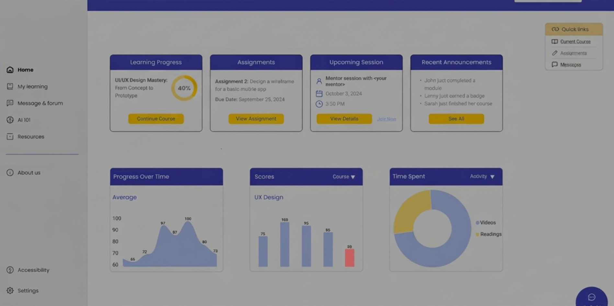
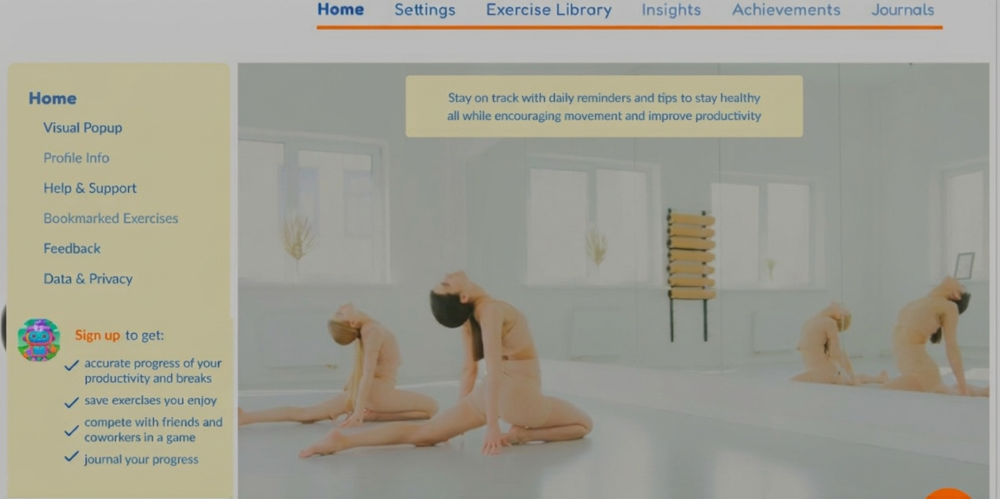
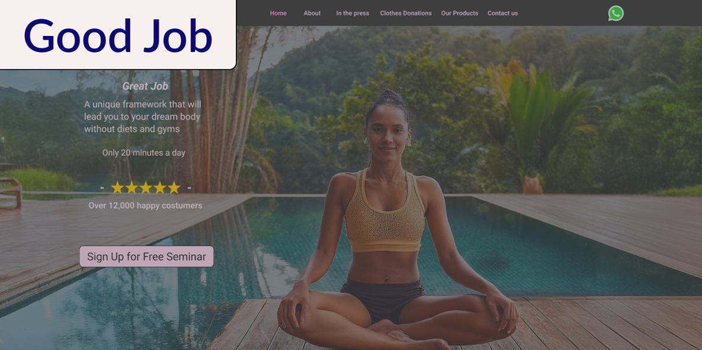

I create intuitive and visually appealing digital experiences.
Let's build something great together.
Case Studies

UXcelerate
Product

Vitto.Ai
Product

Great Job
Landing Page
UXcelerate
Prototype
My Role
Problem Solution
Main Research Conclusion
User Flow
Story Board
Home Screen
AI 101 Screen
Resources Screen
Conclusion
Designing the UX bootcamp web app from scratch was a rewarding and collaborative experience. As part of a dedicated team comprising a design lead and two designers, I contributed to several screens individually while also engaging in thorough review sessions where we provided constructive feedback to one another. This iterative process enhanced the quality of our work and fostered a strong sense of teamwork. Additionally, our collective efforts in research, including the formulation of usability testing, ensured that we created a user-centered design that effectively meets the needs of our target audience. Overall, this project not only refined my design skills but also highlighted the importance of collaboration and feedback in the UX design process.
Vitto.Ai
Prototype
My Role
Problem Solution
Affinity Map - Conclusions
User Journey
Story Board
Wireframes
High-fidelity, Profile Info
Chrome Extension Popup
Conclusion
Working on Vitto.AI was an enriching experience that allowed me to collaborate with a diverse and talented team while deepening my expertise in prototyping, UI design, and brainstorming processes. Throughout the project, I played a key role in designing the Chrome extension popup, profile info screens, and other essential UI elements, ensuring they aligned with user needs and project goals.
One of the biggest challenges was managing the complexity of the app, which offered users a wide range of features and customization options. To stay on top of the evolving design, effective teamwork and open communication were essential.
This project reinforced my ability to work in a fast-paced, multidisciplinary environment while sharpening my skills in UX/UI design. The insights and hands-on experience I gained will undoubtedly shape my future projects, allowing me to approach complex design challenges with greater confidence and efficiency.
Great Job
Prototype
My Role
Landing Page Typography & Layout Choices
When designing the landing page, I was intentional about maintaining a balanced and cohesive look by ensuring the font size wasn’t overly exaggerated. Instead, I focused on a subtle and refined type hierarchy that enhances readability without overwhelming the user. This delicate approach helps create a more approachable and user-friendly interface.
In the Hero Section, while I kept the overall font size consistent, I chose to slightly emphasize the headline to draw attention without breaking the subtle aesthetic established throughout the page. This provides a visual anchor for users as they begin their journey through the page.
Regarding text alignment, most of the content is left-aligned, following the F-pattern—a common reading pattern that enhances the user's scanning experience. This decision was rooted in research on user behavior and eye-tracking studies, ensuring that the content flows naturally and is easy to digest, improving overall readability and user engagement.
Banner Design & Animation Decisions
The banner design includes a rightward movement effect, which adds an element of dynamic interaction. While the animation can’t be fully appreciated in a static image, the subtle motion was intentionally designed to catch the user's eye without being distracting. The smooth horizontal motion guides the viewer's attention in a natural way, encouraging exploration of the content.
In addition to the animation, I implemented a subtle visual effect to enhance the banner’s aesthetic. This was carefully chosen to add a polished, modern feel without overwhelming the user. The goal was to achieve a refined, professional look while maintaining a lightweight design that complements the rest of the page.
This balance between motion and visual styling enhances the overall user experience, making the banner both functional and visually appealing.
“About Me” Section: Layout & Interaction Design
In the "About Me" section, I made a conscious decision to streamline the landing page by placing three images side by side, rather than stacking them vertically. This horizontal layout not only reduced the page’s length, but also created a more visually dynamic experience, allowing users to quickly scan key milestones or content without excessive scrolling.
Each image/milestone is housed in its own dedicated column, with clear separation between them to maintain visual clarity and balance. This grid layout enhances readability and ensures each piece of content stands out individually, preventing visual clutter.
To encourage user engagement, I placed the call-to-action button centrally, directly beneath the columns. This strategic placement creates a natural flow as users progress through the content, guiding them toward the action I want them to take without interrupting their journey.
Iconography & Visual Placement
To represent the concept of donation, I selected an icon featuring two hands holding a heart, a widely recognized symbol for generosity and support. This choice reinforces the emotional connection users associate with charitable actions, adding visual context to the content.
The icon is strategically positioned above the text, aligning with the natural eye movement patterns based on the F-pattern. This placement ensures that the user's attention is drawn to the most important elements first, creating a seamless flow from the icon to the supporting text. By guiding the user's eyes in this way, the design enhances readability and reinforces the intended message effectively.
Conclusion
This project was an opportunity to craft a visually engaging and user-friendly landing page tailored specifically for a personal trainer’s audience. By focusing on modern typography, dynamic yet subtle animations, and a structured layout, I aimed to create an experience that feels both inviting and professional.
The balanced type hierarchy and F-pattern layout improved readability, while the thoughtful placement of imagery and interactive elements ensured a seamless user journey. Every design decision—from the motion-enhanced banner to the horizontally structured “About Me” section—was driven by the goal of enhancing clarity and engagement without overwhelming the user.
This project reinforced my approach as a UX/UI designer: designing with purpose, clarity, and user-centric thinking to create meaningful digital experiences.